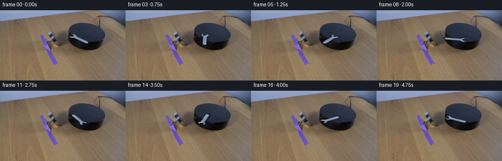
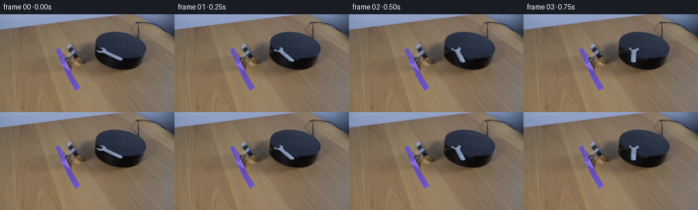
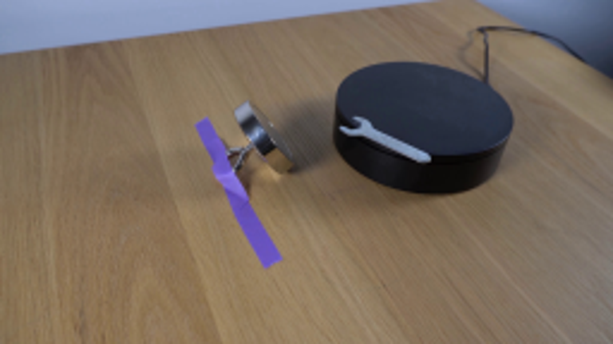
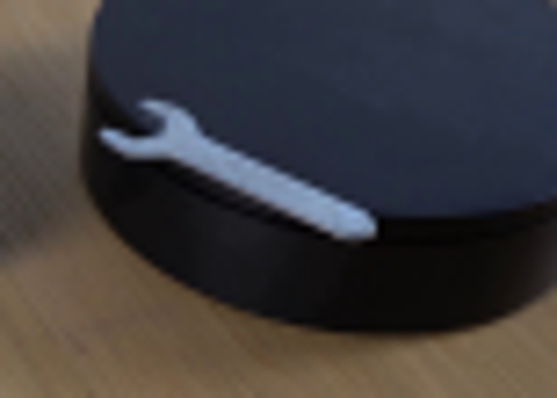
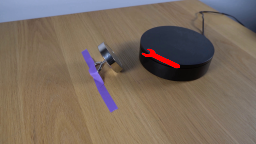
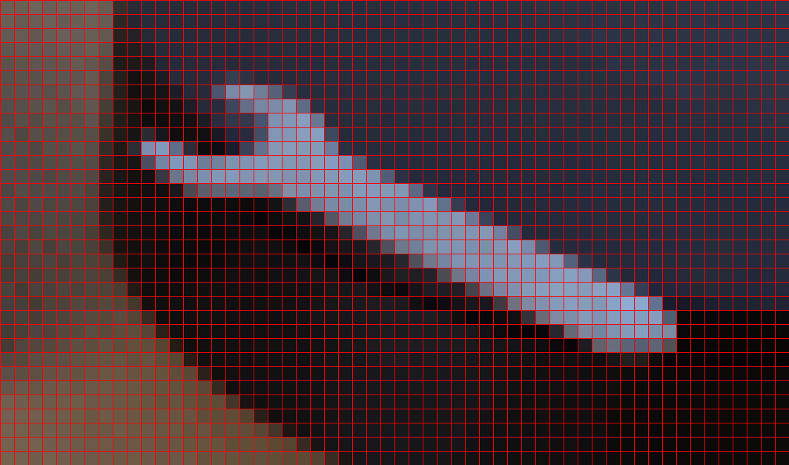
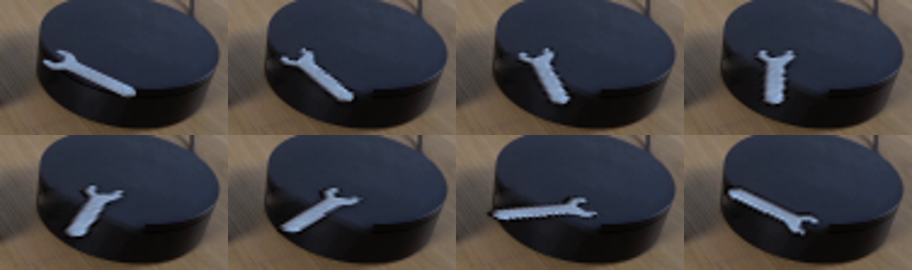
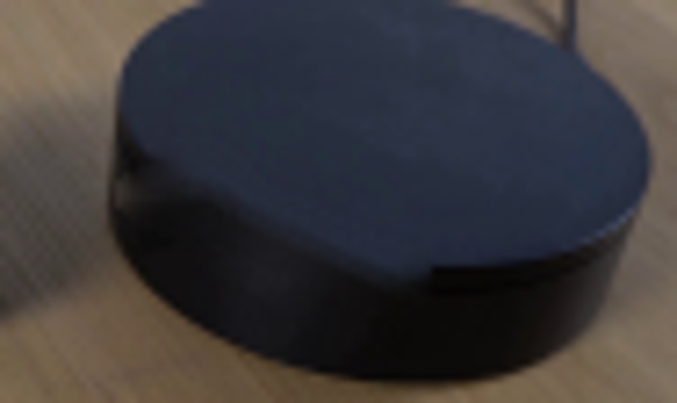

CODING AGENTS AS PIXEL WORLD MODELS
traex/GPT-5.6-Sol · 0100
点击播放 · 原生 RGB 像素
逐轮保存的候选
回放视频、检查图与代码变化。
每份候选均可单独播放。实际图片检查记录在下方工具轨迹中。
候选 01播放与检查图
点击播放 · 原生 RGB 像素


展开代码变化
--- 上一保存版本
+++ 本次保存版本
@@ -0,0 +1,96 @@
+from pathlib import Path
+import math
+import cv2
+import numpy as np
+from PIL import Image
+import artifact_io
+
+# This animation keeps the photographed scene locked and manipulates only the
+# small wrench. Rotation is calculated in the plane of the tabletop, rather
+# than merely in image coordinates, so the photographed foreshortening remains
+# convincing as the wrench turns.
+CASE_DIR = Path(__file__).resolve().parent
+src_rgb = np.asarray(Image.open(CASE_DIR / "first_frame.png").convert("RGB"), dtype=np.uint8)
+h, w = src_rgb.shape[:2]
+src = src_rgb.astype(np.float32)
+
+# Segment the cool, bright metal against the warm wood and nearly black puck.
+gray = cv2.cvtColor(src_rgb, cv2.COLOR_RGB2GRAY)
+r, g, b = (src_rgb[..., i] for i in range(3))
+roi = np.zeros((h, w), np.uint8)
+roi[43:75, 134:188] = 1
+seed = ((gray > 69) & (b.astype(np.int16) + 5 >= r) & (roi != 0)).astype(np.uint8)
+seed = cv2.morphologyEx(seed, cv2.MORPH_CLOSE, np.ones((3, 3), np.uint8))
+# Retain the wrench component and discard tiny highlights in the vicinity.
+n, labels, stats, _ = cv2.connectedComponentsWithStats(seed, 8)
+mask = np.zeros((h, w), np.uint8)
+for i in range(1, n):
+ x, y, ww, hh, area = stats[i]
+ if area >= 60 and x < 150 and x + ww > 170:
+ mask[labels == i] = 255
+# Recover a thin ring of darker anti-aliased metal edge pixels.
+near = cv2.dilate(mask, np.ones((3, 3), np.uint8)) > 0
+edge = near & (roi != 0) & (gray > 54) & (b.astype(np.int16) + 4 >= r)
+mask[edge] = 255
+mask = cv2.morphologyEx(mask, cv2.MORPH_CLOSE, np.ones((2, 2), np.uint8))
+
+# A crisp core and a very narrow fractional edge preserve the original camera
+# softness without creating a pale cut-out halo.
+alpha = mask.astype(np.float32) / 255.0
+alpha = cv2.GaussianBlur(alpha, (0, 0), 0.38)
+alpha[alpha < 0.025] = 0
+alpha = np.clip(alpha, 0, 1)
+
+# Remove the original wrench and its tiny contact shadow from a background copy.
+# Telea interpolation is especially unobtrusive here because this region is the
+# puck's subtly textured, almost uniform charcoal top.
+remove = cv2.dilate(mask, cv2.getStructuringElement(cv2.MORPH_ELLIPSE, (7, 7)))
+background = cv2.inpaint(src_rgb, remove, 4, cv2.INPAINT_TELEA).astype(np.float32)
+
+# Premultiplied source avoids dark fringes during affine resampling.
+premul = src * alpha[..., None]
+
+# Geometric center of the photographed wrench. S maps tabletop coordinates to
+# image coordinates: vertical directions on the table are foreshortened by the
+# camera and have a slight perspective shear.
+cx, cy = 160.7, 58.7
+S = np.array([[1.0, 0.055], [0.035, 0.53]], dtype=np.float64)
+Sinv = np.linalg.inv(S)
+
+def affine_for_clockwise(theta):
+ c, s = math.cos(theta), math.sin(theta)
+ # With image/table y increasing downward, this is clockwise rotation.
+ R = np.array([[c, -s], [s, c]], dtype=np.float64)
+ A = S @ R @ Sinv
+ center = np.array([cx, cy], dtype=np.float64)
+ t = center - A @ center
+ return np.array([[A[0,0], A[0,1], t[0]],
+ [A[1,0], A[1,1], t[1]]], dtype=np.float32)
+
+def warp(arr, M):
+ return cv2.warpAffine(arr, M, (w, h), flags=cv2.INTER_CUBIC,
+ borderMode=cv2.BORDER_CONSTANT, borderValue=0)
+
+frames = [src_rgb.copy()]
+# One smooth clockwise revolution in five seconds (18 degrees per 1/4 second).
+for i in range(1, 20):
+ theta = (2.0 * math.pi) * (i / 20.0)
+ M = affine_for_clockwise(theta)
+ a = np.clip(warp(alpha, M), 0.0, 1.0)
+ p = warp(premul, M)
+
+ # Soft contact shadow follows the wrench but is displaced slightly toward
+ # the front-right, matching the illumination visible in the photograph.
+ shadow_a = cv2.GaussianBlur(a, (0, 0), 1.15)
+ shadow_a = cv2.warpAffine(shadow_a, np.array([[1,0,0.65],[0,1,1.25]], np.float32),
+ (w,h), flags=cv2.INTER_LINEAR,
+ borderMode=cv2.BORDER_CONSTANT, borderValue=0)
+ shadow_a = np.clip(shadow_a * 0.27, 0, 0.30)
+ layer = background * (1.0 - shadow_a[..., None])
+ out = layer * (1.0 - a[..., None]) + p
+ frames.append(np.clip(out + 0.5, 0, 255).astype(np.uint8))
+
+frames = np.stack(frames, axis=0)
+assert frames.shape == (20, 144, 256, 3) and frames.dtype == np.uint8
+assert np.array_equal(frames[0], src_rgb)
+artifact_io.save(frames, CASE_DIR)
可观测工具轨迹
实际执行的命令与返回图片。
命令 1exit 0
/bin/bash -lc "cat prompt.txt && printf '\\n--- GENERATION RULES ---\\n' && cat GENERATION_RULES.md"
命令 2exit 0
/bin/bash -lc "find . -maxdepth 2 -type f -printf '%p\\n' | sort && printf '\\n--- tools ---\\n' && command -v ffmpeg || true && command -v python3 || true"
命令 3exit 0
/bin/bash -lc "sed -n '1,240p' artifact_io.py && python3 - <<'PY'
from PIL import Image
im=Image.open('first_frame.png').convert('RGB')
print(im.size, im.getpixel((0,0)))
im.crop((128,35,205,90)).resize((616,440)).save('.tmp/platform_crop.png')
im.resize((768,432)).save('.tmp/upscaled.png')
PY"命令 4exit 0
/bin/bash -lc "python3 - <<'PY' mods=['PIL','numpy','cv2','scipy','skimage','imageio'] for m in mods: try: z=__import__(m); print(m,'OK',getattr(z,'__version__','')) except Exception as e: print(m,'NO',e) PY"
命令 5exit 0
/bin/bash -lc "cat > .tmp/test_mask.py <<'PY'
import cv2, numpy as np
from PIL import Image
im=cv2.imread('first_frame.png')
# object ROI
roi=np.zeros(im.shape[:2],np.uint8); roi[44:76,135:186]=1
b,g,r=cv2.split(im)
gray=cv2.cvtColor(im,cv2.COLOR_BGR2GRAY)
# metal: bright neutral/bluish pixels on dark disk
m=((gray>72)&(roi>0)).astype(np.uint8)*255
# remove obvious warm table pixels (R > B*1.16)
m[(r.astype(float)>b.astype(float)*1.18)&(g.astype(float)>b.astype(float)*1.08)]=0
# pick connected candidates and close
a=cv2.morphologyEx(m,cv2.MORPH_CLOSE,np.ones((3,3),np.uint8))
num,lab,st,cent=cv2.connectedComponentsWithStats(a)
print([(i,st[i].tolist(),cent[i].tolist()) for i in range(1,num)])
# retain comps > 3 pixels around target
m2=np.zeros_like(m)
for i in range(1,num):
x,y,w,h,area=st[i]
if area>5 and x<185 and x+w>139: m2[lab==i]=255
# dilated potential antialias alpha region, alpha from luma estimate against dark bg
vis=im.copy(); vis[m2>0]=(0,0,255)
cv2.imwrite('.tmp/mask.png',m2)
cv2.imwrite('.tmp/mask_overlay.png',vis)
print('range',gray[m2>0].min(),gray[m2>0].max(), 'count',np.sum(m2>0))
PY
python3 .tmp/test_mask.py"命令 6exit 0
/bin/bash -lc "python3 - <<'PY'
from PIL import Image
im=Image.open('first_frame.png').convert('RGB')
pts=[(143,52),(145,55),(148,57),(153,57),(160,59),(170,64),(178,67),(140,54),(144,49),(160,50),(150,62),(180,68)]
for p in pts: print(p, im.getpixel(p))
PY"命令 7exit 0
/bin/bash -lc "python3 - <<'PY'
from PIL import Image, ImageDraw
im=Image.open('first_frame.png').convert('RGB')
c=im.crop((132,43,188,76)).resize((1120,660),Image.Resampling.NEAREST)
d=ImageDraw.Draw(c)
for x in range(0,1121,20): d.line((x,0,x,660),fill=(255,0,0),width=1)
for y in range(0,661,20): d.line((0,y,1120,y),fill=(255,0,0),width=1)
c.save('.tmp/wrench_grid.png')
PY"命令 8exit 0
/bin/bash -lc "cat > generate.py <<'PY'
from pathlib import Path
import math
import cv2
import numpy as np
from PIL import Image
import artifact_io
# This animation keeps the photographed scene locked and manipulates only the
# small wrench. Rotation is calculated in the plane of the tabletop, rather
# than merely in image coordinates, so the photographed foreshortening remains
# convincing as the wrench turns.
CASE_DIR = Path(__file__).resolve().parent
src_rgb = np.asarray(Image.open(CASE_DIR / \"first_frame.png\").convert(\"RGB\"), dtype=np.uint8)
h, w = src_rgb.shape[:2]
src = src_rgb.astype(np.float32)
# Segment the cool, bright metal against the warm wood and nearly black puck.
gray = cv2.cvtColor(src_rgb, cv2.COLOR_RGB2GRAY)
r, g, b = (src_rgb[..., i] for i in range(3))
roi = np.zeros((h, w), np.uint8)
roi[43:75, 134:188] = 1
seed = ((gray > 69) & (b.astype(np.int16) + 5 >= r) & (roi "'!= 0)).astype(np.uint8)
seed = cv2.morphologyEx(seed, cv2.MORPH_CLOSE, np.ones((3, 3), np.uint8))
# Retain the wrench component and discard tiny highlights in the vicinity.
n, labels, stats, _ = cv2.connectedComponentsWithStats(seed, 8)
mask = np.zeros((h, w), np.uint8)
for i in range(1, n):
x, y, ww, hh, area = stats[i]
if area >= 60 and x < 150 and x + ww > 170:
mask[labels == i] = 255
# Recover a thin ring of darker anti-aliased metal edge pixels.
near = cv2.dilate(mask, np.ones((3, 3), np.uint8)) > 0
edge = near & (roi != 0) & (gray > 54) & (b.astype(np.int16) + 4 >= r)
mask[edge] = 255
mask = cv2.morphologyEx(mask, cv2.MORPH_CLOSE, np.ones((2, 2), np.uint8))
# A crisp core and a very narrow fractional edge preserve the original camera
# softness without creating a pale cut-out halo.
alpha = mask.astype(np.float32) / 255.0
alpha = cv2.GaussianBlur(alpha, (0, 0), 0.38)
alpha[alpha < 0.025] = 0
alpha = np.clip(alpha, 0, 1)
# Remove the original wrench and its tiny contact shadow from a background copy.
# Telea interpolation is especially unobtrusive here because this region is the
# puck'"'s subtly textured, almost uniform charcoal top.
remove = cv2.dilate(mask, cv2.getStructuringElement(cv2.MORPH_ELLIPSE, (7, 7)))
background = cv2.inpaint(src_rgb, remove, 4, cv2.INPAINT_TELEA).astype(np.float32)
# Premultiplied source avoids dark fringes during affine resampling.
premul = src * alpha[..., None]
# Geometric center of the photographed wrench. S maps tabletop coordinates to
# image coordinates: vertical directions on the table are foreshortened by the
# camera and have a slight perspective shear.
cx, cy = 160.7, 58.7
S = np.array([[1.0, 0.055], [0.035, 0.53]], dtype=np.float64)
Sinv = np.linalg.inv(S)
def affine_for_clockwise(theta):
c, s = math.cos(theta), math.sin(theta)
# With image/table y increasing downward, this is clockwise rotation.
R = np.array([[c, -s], [s, c]], dtype=np.float64)
A = S @ R @ Sinv
center = np.array([cx, cy], dtype=np.float64)
t = center - A @ center
return np.array([[A[0,0], A[0,1], t[0]],
[A[1,0], A[1,1], t[1]]], dtype=np.float32)
def warp(arr, M):
return cv2.warpAffine(arr, M, (w, h), flags=cv2.INTER_CUBIC,
borderMode=cv2.BORDER_CONSTANT, borderValue=0)
frames = [src_rgb.copy()]
# One smooth clockwise revolution in five seconds (18 degrees per 1/4 second).
for i in range(1, 20):
theta = (2.0 * math.pi) * (i / 20.0)
M = affine_for_clockwise(theta)
a = np.clip(warp(alpha, M), 0.0, 1.0)
p = warp(premul, M)
# Soft contact shadow follows the wrench but is displaced slightly toward
# the front-right, matching the illumination visible in the photograph.
shadow_a = cv2.GaussianBlur(a, (0, 0), 1.15)
shadow_a = cv2.warpAffine(shadow_a, np.array([[1,0,0.65],[0,1,1.25]], np.float32),
(w,h), flags=cv2.INTER_LINEAR,
borderMode=cv2.BORDER_CONSTANT, borderValue=0)
shadow_a = np.clip(shadow_a * 0.27, 0, 0.30)
layer = background * (1.0 - shadow_a[..., None])
out = layer * (1.0 - a[..., None]) + p
frames.append(np.clip(out + 0.5, 0, 255).astype(np.uint8))
frames = np.stack(frames, axis=0)
assert frames.shape == (20, 144, 256, 3) and frames.dtype == np.uint8
assert np.array_equal(frames[0], src_rgb)
artifact_io.save(frames, CASE_DIR)
PY
python3 generate.py
python3 - <<'PY'
import cv2
from PIL import Image
# make a close-up strip for checking segmentation/background and transformed shape
ims=[Image.open(f'frames/{i:02d}.png').crop((124,28,218,84)).resize((376,224)) for i in [0,1,2,3,4,5,7,10]]
out=Image.new('RGB',(376*4,224*2))
for j,im in enumerate(ims): out.paste(im,((j%4)*376,(j//4)*224))
out.save('.tmp/wrench_motion.png')
PY"命令 9exit 0
/bin/bash -lc "python3 - <<'PY'
# execute only setup before frames to inspect background isn't simple; import triggers outputs then canât access local module? actually import
import generate
from PIL import Image
import numpy as np
Image.fromarray(np.uint8(np.clip(generate.background,0,255))).crop((124,28,218,84)).resize((752,448)).save('.tmp/background_fill.png')
# verify deliverables
z=np.load('pixels.npz')['pixels']
from PIL import Image
f0=np.asarray(Image.open('first_frame.png').convert('RGB'))
p=(z[:,:,0]); rec=np.stack(((p>>16)&255,(p>>8)&255,p&255),axis=-1).astype('uint8')
print('tensor',z.shape,z.dtype,'first_identical',np.array_equal(rec,f0),'frames',len(list(__import__('pathlib').Path('frames').glob('*.png'))))
PY"视觉工具实际返回图片 1

视觉工具实际返回图片 2

视觉工具实际返回图片 3

视觉工具实际返回图片 4
视觉工具实际返回图片 5

视觉工具实际返回图片 6

视觉工具实际返回图片 7

视觉工具实际返回图片 8

保存候选 1 份；完成命令 9 次；可验证图片返回 8 张。原始 API 响应与完整日志保留在本地。